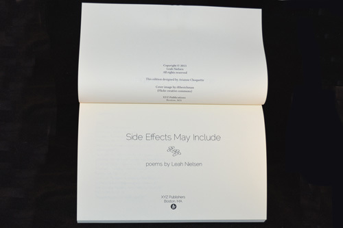
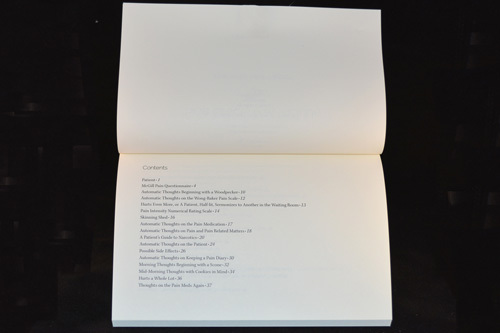
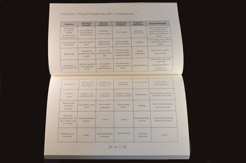
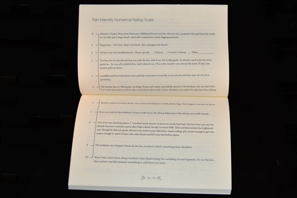
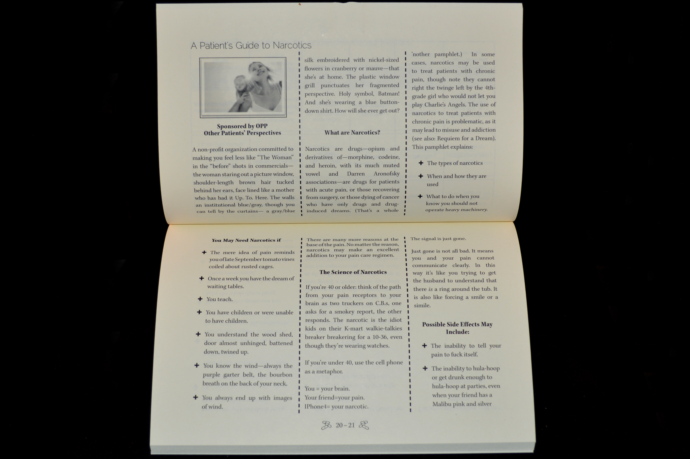

---
layout: default
title: Side Effects May Include
---     
<article>
    <div class="wrapper">
        <h1>Side Effects May Include</h1>
            

        <p><em>Side Effects May Include</em> is one of three books of poetry that I designed as part of a book design and production course. The three books were designed as a series with similar cover designs and the same typography for all of the interiors. This book was designed to be read as a 9x6, due to the nature of the poems in chart form, but it has a standard cover for cohesion with the others in the series. This edition of <em>Side Effects</em> won a spot in the 2014 New England Book Show. (Note: This edition is a different edition than the one currently for sale.)</p>

        <div class="jcarousel-wrapper">
            <div class="jcarousel">
                <ul>
                	<li></li>
                	<li></li>
                	<li></li>
                	<li></li>
                	<li></li>
                	<li></li>
					<li></li>
					<li></li>
                </ul>
            </div>

            <a href="#" class="jcarousel-control-prev">&lsaquo;</a>
            <a href="#" class="jcarousel-control-next">&rsaquo;</a>

            <p class="jcarousel-pagination"></p>
        </div>
    </div>		
			
	<div class="download link"><a href="side-effects/sideeffects-spreads.pdf" target="_blank">Click to download a sample PDF!</a></div>
			
</article>